Specialized in Revit API development and custom BIM automation tools. We build production-grade add-ins that eliminate repetitive modeling tasks across Architecture, Structure, MEP, and Infrastructure — deployed on real hospital, university, and large-scale residential projects.
Manual BIM modeling is the single largest time sink in any engineering workflow. Automation changes everything.
Tasks that previously took full working days are completed in minutes. Our tools have been benchmarked on real hospital and university projects.
Manual placement means manual mistakes. Automated placement reads directly from engineering drawings — no re-interpretation, no typos, no missed elements.
Every project follows the same standards automatically. Naming conventions, type families, cover constraints — all enforced without manual effort.
A 10-floor building or a 50-floor tower — automation scales instantly. What increases linearly in manual effort stays constant with our tools.
A focused team building world-class BIM automation — not just tools, but complete workflow solutions.
We don't just deliver ready-made tools — we engineer custom solutions for any workflow in any discipline.
We design, build, and deliver fully custom Revit add-ins tailored to your company's exact workflow, naming standards, and project requirements. Any discipline, any complexity.
Full analysis and automation of any repetitive BIM task — from structural detailing to architectural finishes to MEP coordination workflows. We study your process and eliminate the manual steps.
Automated pipelines that read imported CAD drawings and generate fully parametric Revit elements — foundations, columns, walls, slabs, beams, rebar — with zero manual re-tracing.
Automated model validation, clash detection assistance, parameter compliance checks, and data integrity tools to ensure your BIM deliverables meet project and code standards.
Multi-discipline automation suites designed for large engineering firms — standardized workflows, team-wide deployment, version management, and custom onboarding.
Purchase and deploy our existing, production-tested automation packages immediately. Structural rebar, CAD-to-Revit modeling, and BIM utilities — ready from day one.
7+ years across construction sites, technical offices, and full-stack BIM development — combining deep engineering knowledge with modern software architecture.
Selected examples of our deployed automation tools — each eliminating hours of manual engineering work per use.
A complete set of 4 tools covering all aspects of RC reinforcement detailing in Revit — from isolated footings and columns to slab additional steel and visibility control. Available as a ready product or customizable to your standards.
Automates all reinforcement detailing for isolated footings in a single operation — placing mesh layers, side bars, and cover constraints automatically.
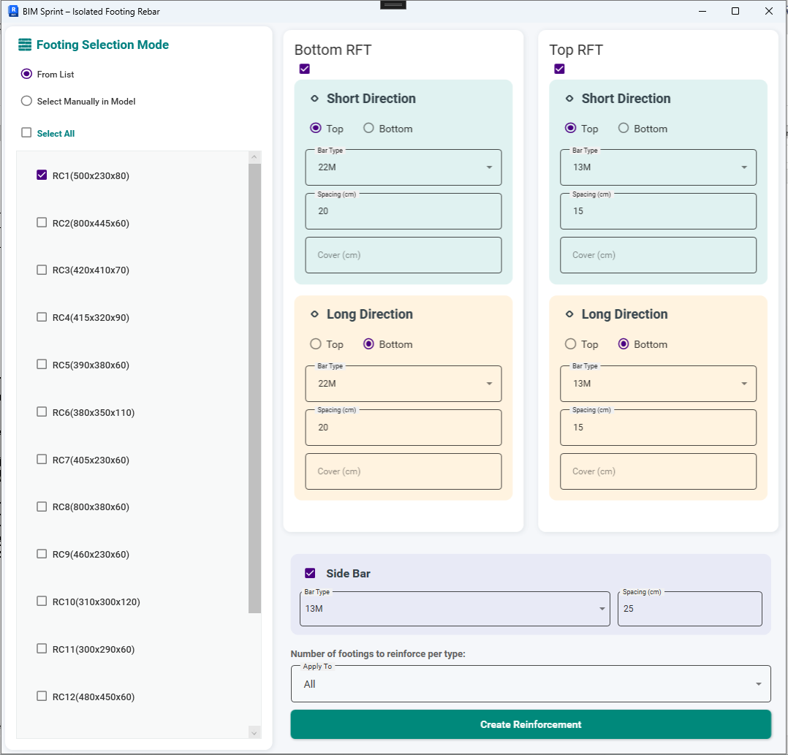
| Task | Manual | With Tool | Saved |
|---|---|---|---|
| Bottom + Top Mesh Placement | ~20 min | ~10 sec | 99% |
| Side Bar Placement | ~10 min | ~5 sec | 99% |
| Cover Constraint | ~30 min | Automatic | 100% |
| Spacing Adjustment Per Footing | ~10 min | Set once → all | 99% |
A complete column detailing engine — handles longitudinal bars, starter bars (dowels), and stirrups with variable spacing zones, fully compliant with the Egyptian Code of Practice.
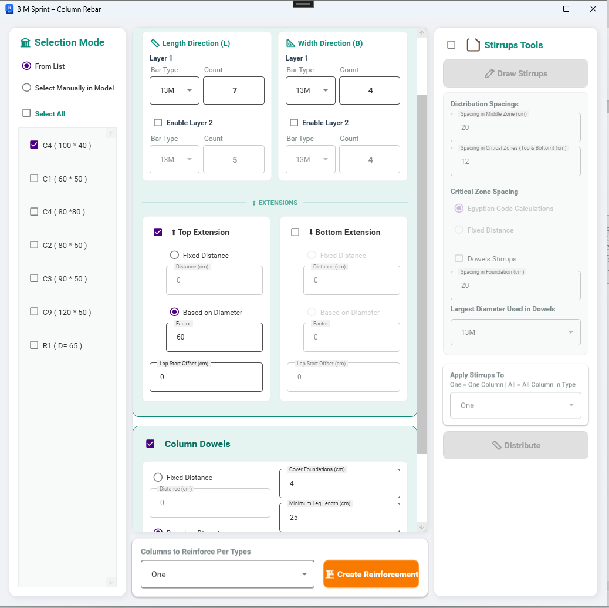
| Task | Manual | With Tool | Saved |
|---|---|---|---|
| Main Longitudinal Bars | ~60 min | ~15 sec | 99% |
| Starter Bars (Dowels) | ~80 min | Included automatically | 99% |
| Stirrups + Variable Zones | ~100 min | ~10 sec | 99% |
| Full Floor — All 20 Columns | ~4 hours | ~1 min | 97% |
Reads an imported CAD drawing directly inside Revit and converts all annotated additional reinforcement into fully parametric Revit rebar — zero manual placement required.
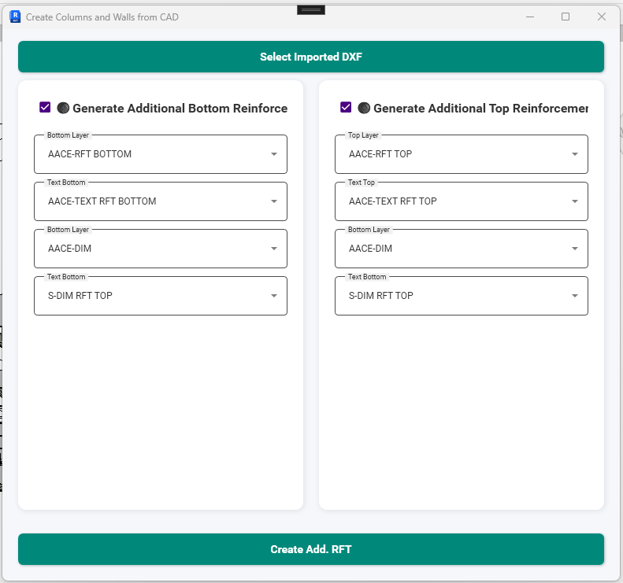
| Task | Manual | With Tool | Saved |
|---|---|---|---|
| Drawing rebar regions (bottom layer) | ~2 hrs | ~30 sec | 99% |
| Bar offset to correct cover position | ~1 hr per layer | Automatic | 100% |
| Spacing & distribution per zone | ~1 hr per zone | Read from drawing | 100% |
| Full slab — both layers complete | ~6–8 hours | ~2 min | 98% |
A one-click visibility manager for all rebar elements across any Revit view — eliminating the multi-step Visibility/Graphic Overrides workflow entirely.
| Task | Manual | With Tool | Saved |
|---|---|---|---|
| Show rebar in one view | ~30 sec (VG dialog) | 1 click | 90% |
| Toggle rebar across 20 views | ~10 min | ~10 sec | 98% |
| Reset visibility after review session | ~5 min per session | 1 click | 99% |
4 tools that convert imported AutoCAD drawings directly into fully parametric Revit structural elements — foundations, columns, walls, slabs, and beams — with automatic type recognition, naming, and correct level placement.
Reads CAD layer geometry and automatically generates Revit foundation elements — isolated footings and raft slabs — with correct dimensions, types, naming conventions, and level offsets.
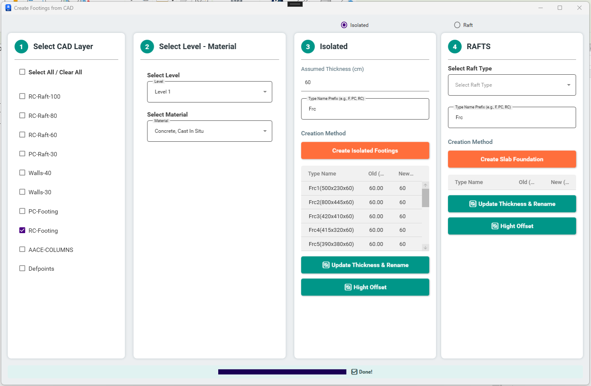
| Task | Manual | With Tool | Saved |
|---|---|---|---|
| Defining family types in Revit | ~30 min | Automatic | 100% |
| Placing each footing manually | ~3 hrs | ~30 sec | 99% |
| Adjusting thickness per type | ~45 min | ~2 min (table) | 96% |
| Total foundation modeling | ~4–5 hrs | ~5 min | 98% |
Processes a CAD plan and generates all structural columns (rectangular and circular) and RC walls as parametric Revit elements — fully typed, named, and placed at correct levels.
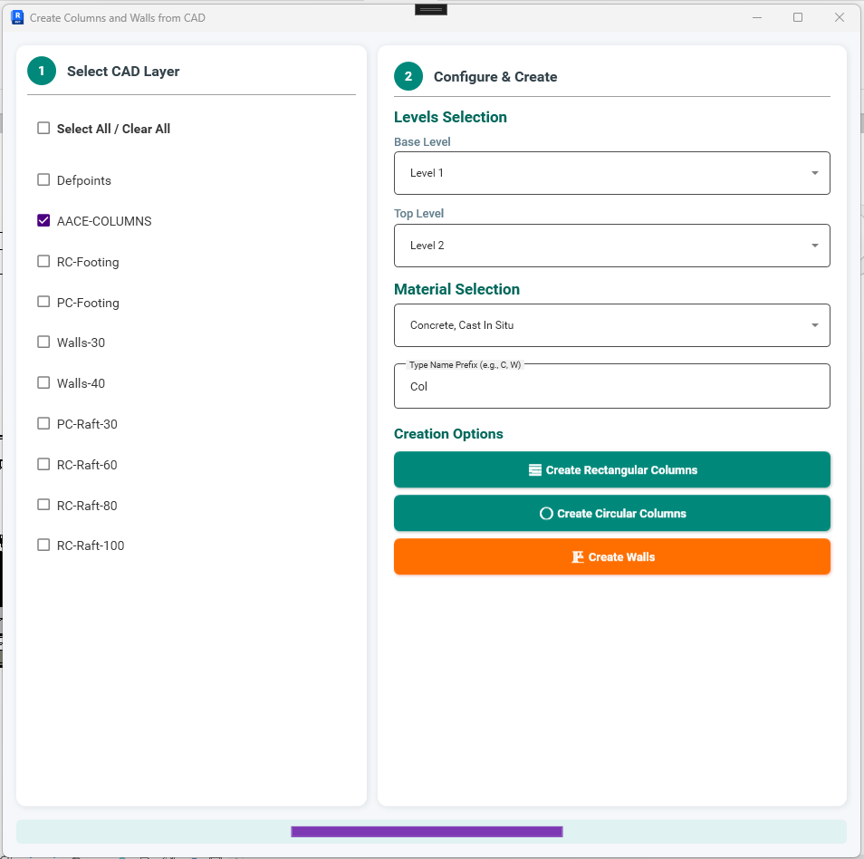
| Task | Manual | With Tool | Saved |
|---|---|---|---|
| Identifying and defining types | ~45 min | Automatic | 100% |
| Placing all columns in model | ~3 hrs | ~1 min | 99% |
| RC Walls — center line + modeling | ~1 hr | ~30 sec | 99% |
| Total vertical elements (1 floor) | ~5 hrs | ~5 min | 98% |
Reads slab boundaries from an imported CAD layer and generates Revit slab elements with correct types, elevations, and Drop Panels — including level adjustment for all slabs.
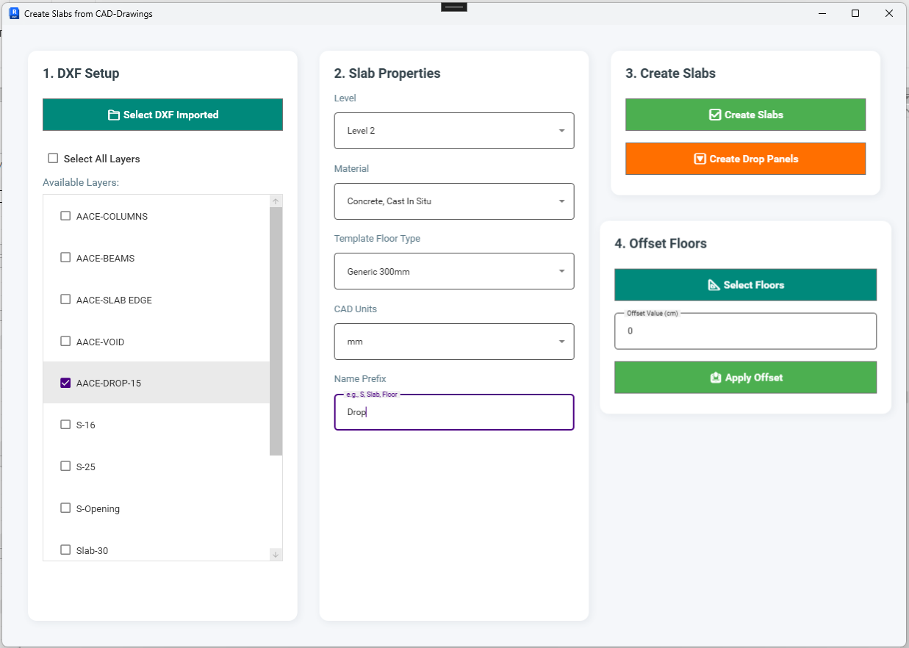
| Task | Manual | With Tool | Saved |
|---|---|---|---|
| Tracing slab boundaries in Revit | ~2 hrs | ~1 min | 99% |
| Assigning types and thickness | ~30 min | Automatic | 100% |
| Placing Drop Panels | ~1.5 hrs | ~30 sec | 99% |
| Level adjustments | ~30 min | ~2 min | 93% |
Reads beam geometry from an imported CAD plan and places all structural beams — including irregular cross-sections, L-shaped, T-shaped, and circular beams — across any number of floors simultaneously.
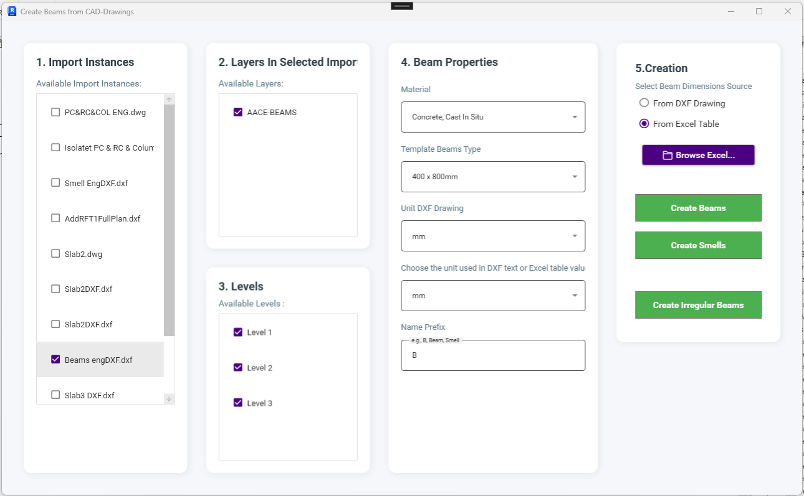
| Task | Manual | With Tool | Saved |
|---|---|---|---|
| Defining beam section types | ~1 hr | Automatic | 100% |
| Tracing and placing beams (1 floor) | ~3 hrs | ~2 min | 99% |
| Replicating to 10 floors | ~30 hrs total | Select levels → done | 99% |
General-purpose tools serving Architectural, Structural, and MEP workflows — model navigation, room finishing management, and parameter data transfer across the entire Revit model.
A centralized model control panel — browse all categories and types, select any combination of elements, and perform bulk actions (isolate, hide, delete, override color) from a single interface.
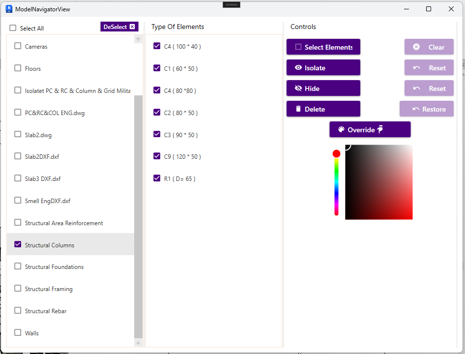
| Task | Manual | With Tool | Saved |
|---|---|---|---|
| Select all slabs by type in Revit | ~5 min | 2 clicks | 95% |
| Apply color override to category | ~3 min | Pick color → done | 98% |
| Delete all elements of a type | ~10 min | Select type → Delete | 97% |
A room management panel that lists all rooms in the project, displays their properties, and lets architects change finish materials while viewing the result live in a Section Box — in real time.
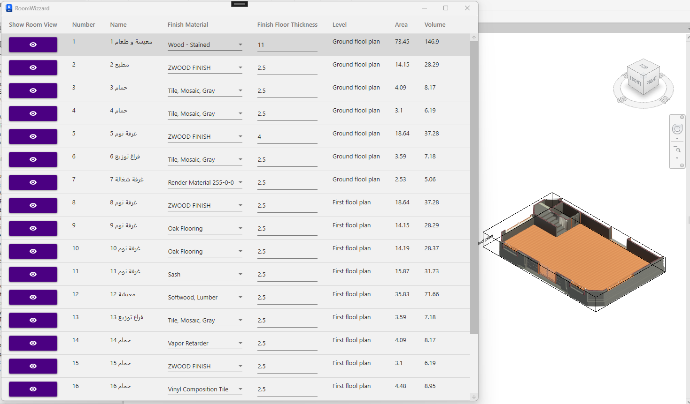
| Task | Manual | With Tool | Saved |
|---|---|---|---|
| Navigate to a specific room in model | ~1–2 min per room | 1 click | 99% |
| Create Section Box for room | ~3 min | Automatic | 100% |
| Change floor finish material | ~2 min | Dropdown → instant | 95% |
| Full review session — 50 rooms | ~4–5 hrs | ~30 min | 90% |
A data management tool for Revit instance parameters — copy, move, or delete parameter values across element instances, or assign new values to any parameter type directly from the interface.
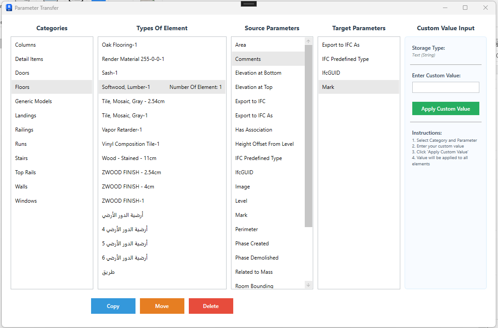
| Task | Manual | With Tool | Saved |
|---|---|---|---|
| Select all elements of a category/type | ~10 min | Category → Type → Select | 95% |
| Copy value to new parameter (500 elements) | Not feasible manually | ~5 sec | 99% |
| Clear a parameter value in bulk | Hours of editing | 1 click | 99% |
The companion to the Instance Parameter Tool — same powerful interface but operating on Revit family type parameters rather than individual instances.
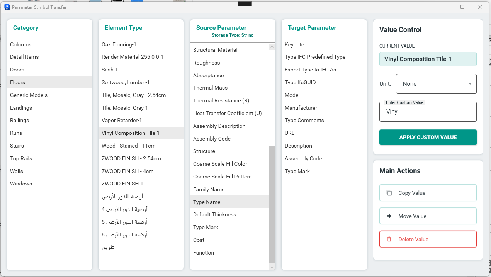
| Task | Manual | With Tool | Saved |
|---|---|---|---|
| Open each type's properties dialog | ~1 min × 80 = 80 min | Browse list — all visible | 99% |
| Update parameter value per type | ~30 sec × 80 = 40 min | Bulk assign → ~3 sec | 99% |
| Verify changes across all types | ~30 min | All visible in list | 90% |
How our automation solutions performed on actual engineering projects — with measurable results.
A large hospital raft slab with 200+ rebar zones required weeks of manual detailing in Revit. The structural team was spending the entire project timeline on rebar placement alone.
Deployed our CAD Rebar tool to read the additional reinforcement directly from the imported structural drawing. The tool extracted bar data, spacing, and zones automatically.
A 10-floor university building required full structural Revit modeling (columns, slabs, beams, foundations) from existing AutoCAD drawings. Manual modeling was estimated at 3–4 weeks.
Applied the full CAD-to-Revit Suite — Foundation Tool, Columns Tool, Slabs Tool, and Beams Tool — processing all CAD layers in sequence across all 10 floors.
Architectural team needed to review and update floor finish materials for 300+ rooms across multiple hospital floors. Manual navigation and property editing was taking days per review cycle.
Deployed the Room Wizard tool — providing instant Section Box navigation per room and live material change preview. The entire review workflow moved into a single panel.